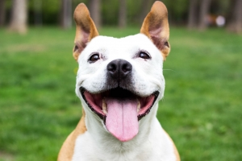

Dog

The dog or domestic dog, is a domesticated descendant of the wolf which is characterized by an upturning tail. The dog derived from an ancient, extinct wolf, and the modern grey wolf is the dog's nearest living relative.
For infomation about other animals check: